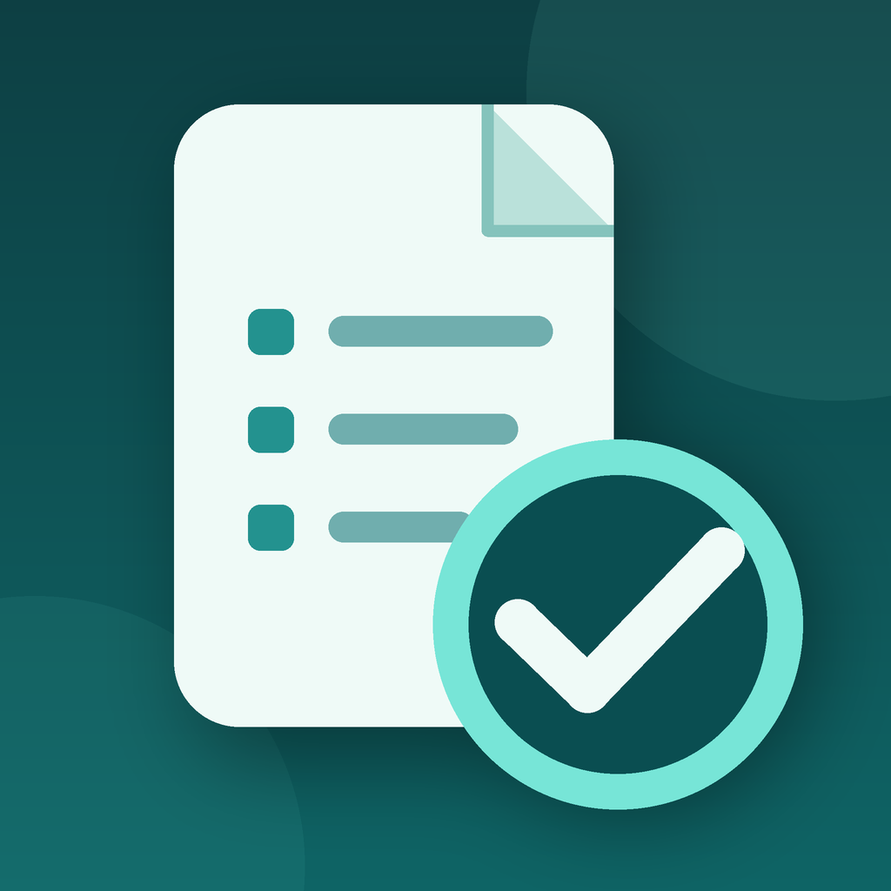
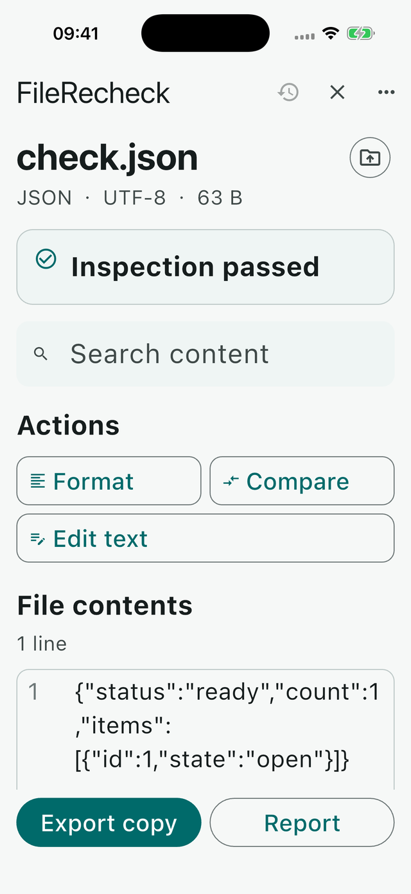
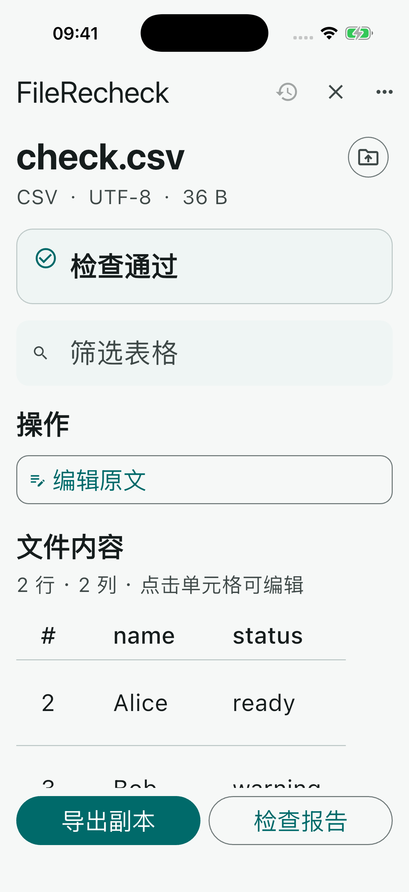

Open and inspect
Read JSON, CSV, TXT and LOG files. See format diagnostics, search content and browse long files in pages.

FileRecheckJSON · CSV · TXT · LOG
Open a selected file through the system picker, find format issues and work with a copy. Preview a report before you decide to export it.
Explore features

File inspection workflow
Read JSON, CSV, TXT and LOG files. See format diagnostics, search content and browse long files in pages.
Format or compare JSON, review CSV as a table and edit a working copy. FileRecheck does not overwrite the selected source.
Read an inspection report in the app. Export a report or processed copy only when you choose to use the system share sheet.
UTF-8 text, including BOM. Up to 5 MiB per file, 10,000 lines and 200 CSV columns. Raw text copy editing is limited to 128 KiB.
文件检查流程
读取 JSON、CSV、TXT 和 LOG 文件，查看格式诊断、搜索内容，并按页浏览长文件。
格式化或比较 JSON，以表格查看 CSV 并编辑工作副本。FileRecheck 不覆盖所选原文件。
先在应用内阅读检查报告；只有主动使用系统分享界面时，才导出报告或处理后的副本。
支持 UTF-8 文本（含 BOM）。单文件最多 5 MiB、10,000 行，CSV 最多 200 列；原文副本编辑限 128 KiB。
The support address and public website are awaiting operator confirmation. This draft is not a live support channel.
支持邮箱与公开网站尚待运营主体确认。此草稿尚不能作为正式支持渠道。